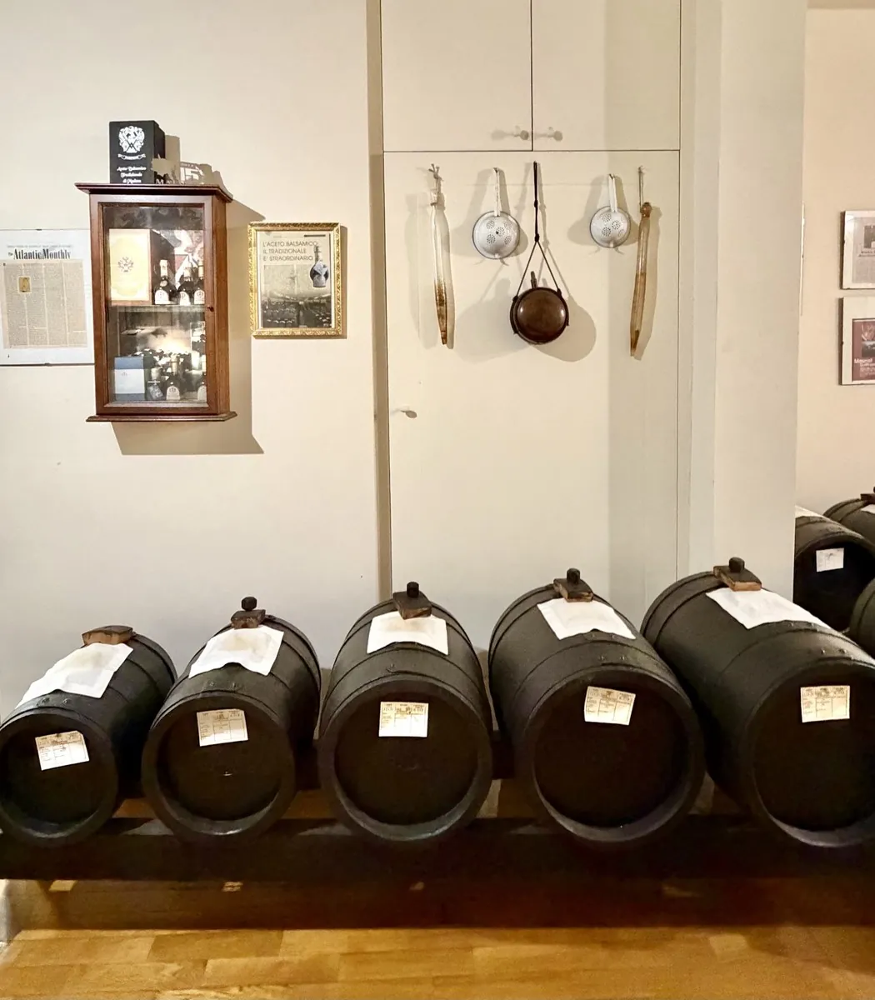
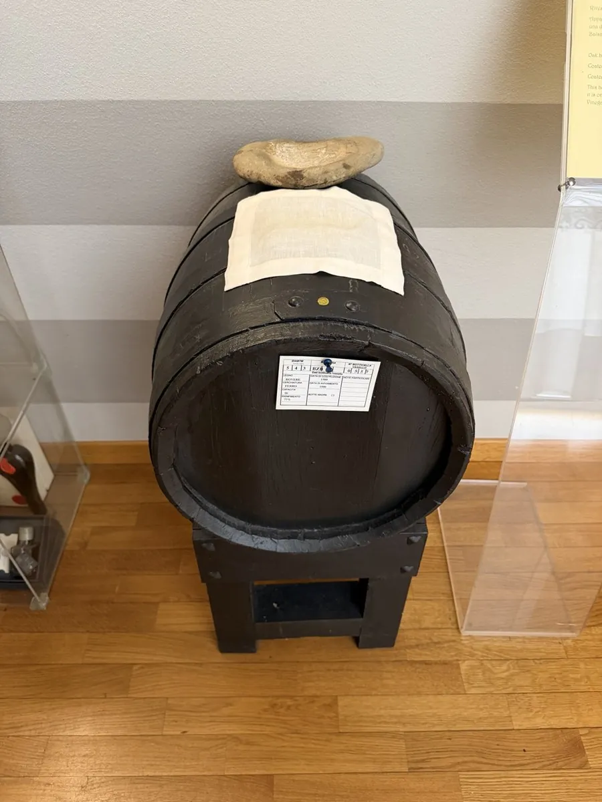
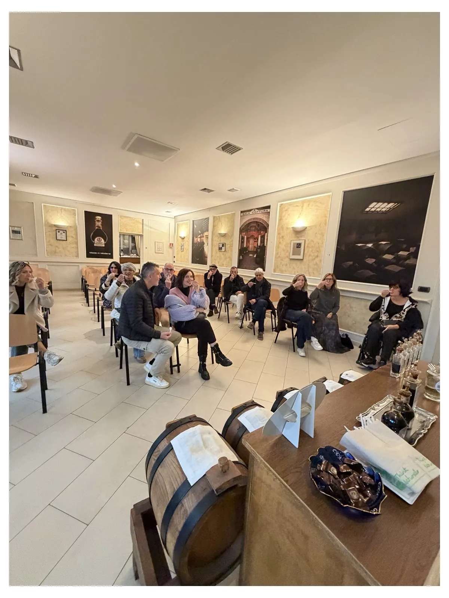
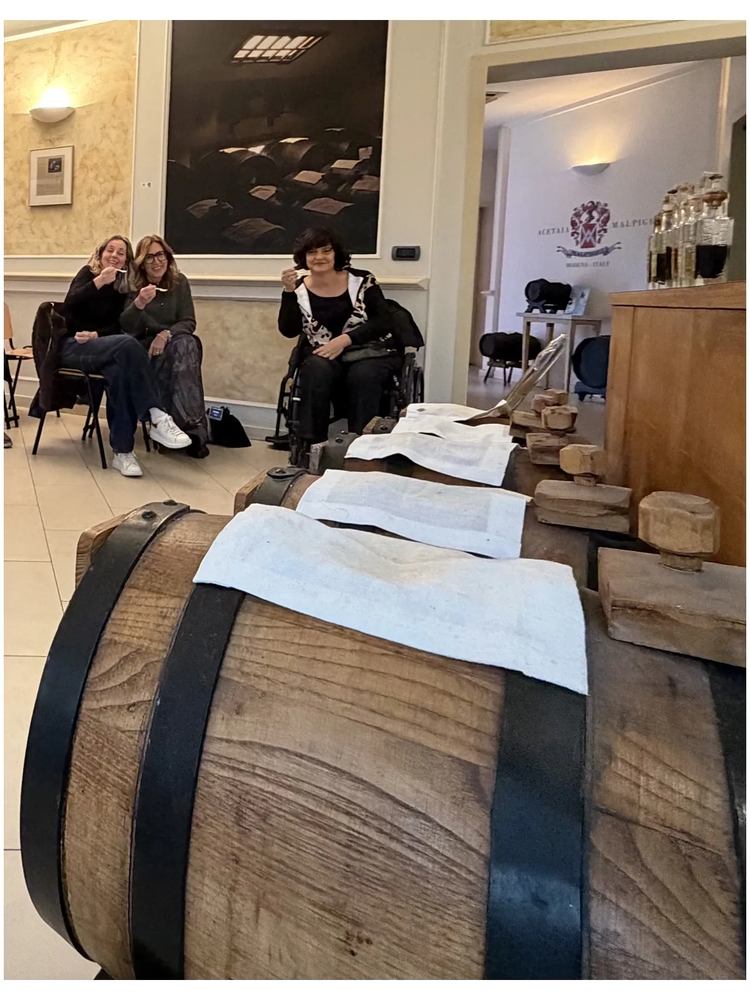
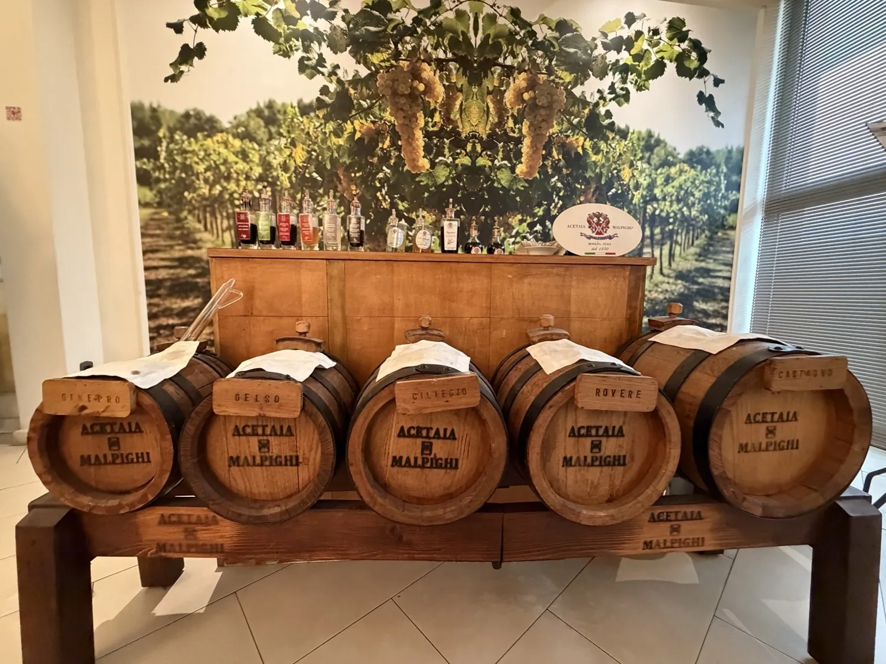
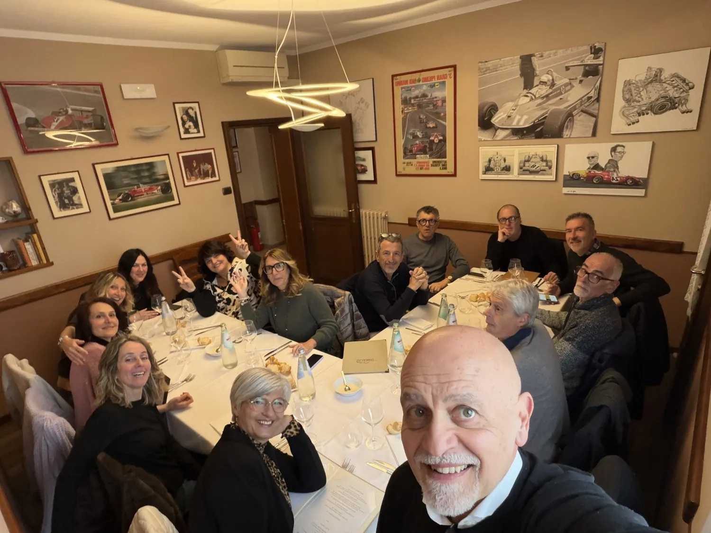
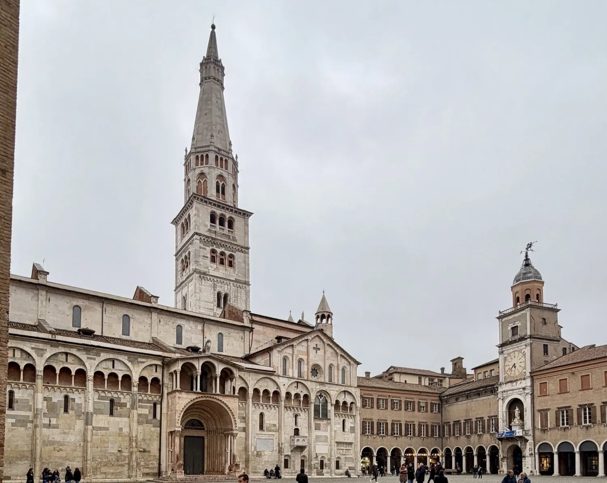
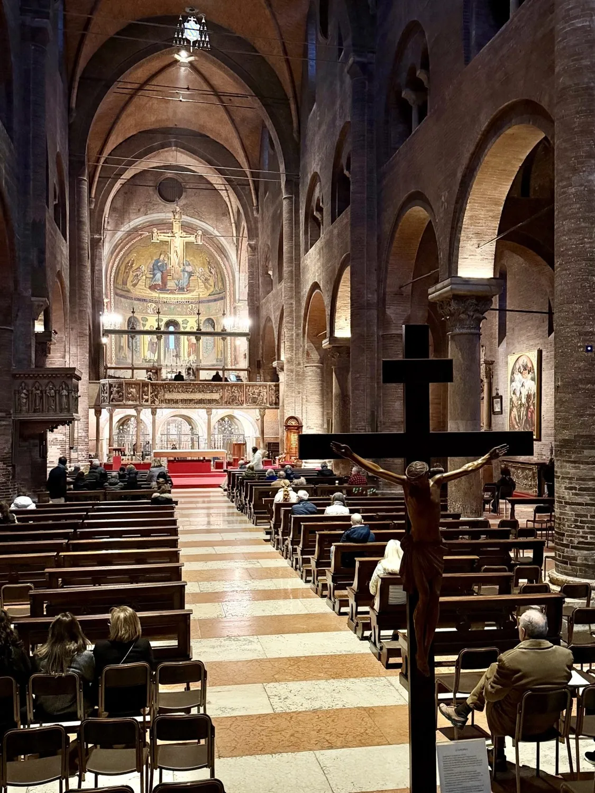
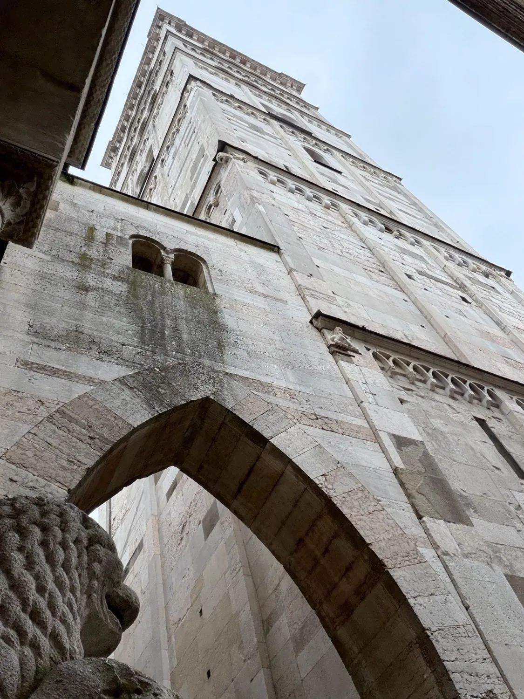
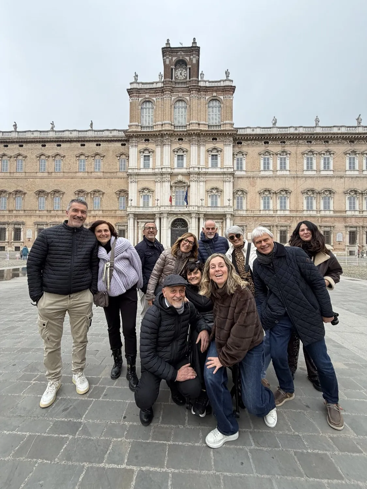

Per questa nostra giornata fuori porta avevamo pensato a un programma che unisse tre esperienze che ci incuriosivano particolarmente: visitare un’acetaia, assaggiare il tradizionale bollito modenese e concludere la giornata nel centro storico di Modena.
Era proprio questo il motivo per cui avevamo scelto Modena: una giornata dedicata ai suoi sapori e alle sue bellezze, alternando tradizione gastronomica, cultura e storia.
Alla scoperta dell’Acetaia Malpighi
La nostra prima tappa è stata l’Acetaia Malpighi, dove avevamo prenotato la visita guidata per le ore 11, scrivendo direttamente via e-mail.
Accessibilità · Acetaia
Avevo scelto questa acetaia anche pensando alla mia accessibilità: la struttura è dotata di ascensore e bagno accessibile.
Durante la visita ho potuto fare esattamente le stesse cose dei miei amici, senza rinunciare a nessuna parte dell’esperienza.
Tra le botti abbiamo osservato anche un esemplare davvero particolare: una storica botte di legno a tre strati. Come racconta il sito dell’acetaia, è stata rivestita nel 1500, nel 1750 e infine nel 1920, per permettere al balsamico di continuare a maturare lentamente. Una piccola testimonianza di secoli di cura e tradizione.


Tra botti, tempo e pazienza
La visita ci ha portato nelle sale di produzione, tra le antiche batterie di botti, dove abbiamo scoperto come nasce e come matura l’Aceto Balsamico e conosciuto più da vicino le tecniche utilizzate nella sua produzione.
È stato interessante vedere da vicino le botti e scoprire quanto tempo, pazienza e cura siano necessari per ottenere questo prodotto così particolare.


La degustazione
La visita è proseguita con la degustazione guidata dei prodotti della Collection Malpighi. Abbiamo assaggiato diverse tipologie di aceto, scoprendone le diverse caratteristiche.
Abbiamo assaggiato anche dei cioccolatini ripieni all’Aceto Balsamico di Modena IGP, una combinazione davvero particolare. Eravamo in dodici e, al termine della degustazione, ce ne hanno regalati alcuni: un piccolo omaggio che abbiamo molto apprezzato.
Prima di andare via ci siamo fermati ad acquistare i prodotti che ci erano piaciuti di più, così da portare a casa un po’ di quella esperienza.

Il pranzo all’Antica Trattoria La Busa
Terminata la visita, ci siamo spostati all’Antica Trattoria La Busa, poco distante dall’acetaia. Era proprio il ristorante che cercavamo per completare la nostra idea di giornata: una trattoria tipica dove assaggiare la cucina della tradizione modenese e, soprattutto, il famoso carrello dei bolliti.
Il locale ci è piaciuto molto: è carino, curato e accogliente. L’abbiamo trovato accessibile in carrozzina, sia all’ingresso sia negli spazi interni. Per il nostro gruppo avevamo una stanza tutta per noi, dove abbiamo potuto pranzare comodamente insieme. Il bollito era proprio quello che desideravamo provare durante questa giornata dedicata alla tradizione modenese.

Da sapere prima di andare
Bagno: era abbastanza ampio da poter essere utilizzato con la carrozzina, ma il WC non era adattato.
È un’informazione da sapere prima di scegliere questo ristorante, soprattutto per chi ha bisogno di un bagno attrezzato.
Il parcheggio e il centro storico
Dopo pranzo abbiamo raggiunto Modena e lasciato l’auto al Piazzale Tien An Men.
Accessibilità · Parcheggio
Nella nostra esperienza è stata una soluzione comoda: un parcheggio all’aperto e gratuito, fuori dalla ZTL, molto ampio e con numerosi posti, compresi gli stalli riservati alle persone con disabilità.
Dal parcheggio abbiamo proseguito direttamente in carrozzina verso il centro storico. La distanza non è brevissima, ma per noi è stata gestibile: abbiamo evitato di entrare nella ZTL e lasciato l’auto in un’area ampia, senza cercare uno stallo lungo le strade del centro.
Piazza Grande
Siamo arrivati in Piazza Grande, il cuore monumentale della città, dove abbiamo iniziato la nostra passeggiata tra i principali luoghi del centro storico. Il Duomo e la Ghirlandina disegnano uno degli scorci più riconoscibili di Modena: una piazza da vivere con calma, fermandosi a guardare i dettagli degli edifici.

Dentro il Duomo, insieme ai miei amici
Abbiamo visitato anche la Cattedrale Metropolitana di Santa Maria Assunta in Cielo e San Geminiano. Le navate, gli archi e la luce dell’interno ci hanno accompagnati in una pausa di quiete, prima di riprendere la passeggiata.
Accessibilità · Ingresso
L’ingresso dedicato alle persone in carrozzina non è quello principale: si trova sul lato della cattedrale ed è dotato di rampa. Bisogna quindi utilizzare questo accesso laterale.
Una volta all’interno, ho potuto visitare la cattedrale insieme ai miei amici.

Usciti dalla cattedrale, abbiamo proseguito nel cuore del complesso monumentale, passando anche sotto gli archi che collegano la Ghirlandina al Duomo. Alzare lo sguardo, da qui, permette di apprezzare ancora meglio l’altezza della torre e la bellezza di questo angolo della città.

Piazza Roma e il Palazzo Ducale
Abbiamo poi raggiunto Piazza Roma, dominata dall’imponente Palazzo Ducale, oggi sede dell’Accademia Militare. La sua facciata fa da sfondo a una piazza ampia, perfetta per una sosta e una foto tutti insieme.

È stata una giornata costruita intorno a ciò che volevamo scoprire: l’Aceto Balsamico, la cucina tradizionale e la storia di Modena. Tre esperienze diverse che ci hanno regalato una bella giornata fuori porta, vissuta insieme ai nostri amici e senza rinunciare alle visite programmate.
Il mio «senza sorprese»
Le informazioni da ricordare, raccolte qui per ritrovarle facilmente.
| Voce | Voto | Da sapere prima |
|---|---|---|
| Parcheggio | 5 su 5 | Piazzale Tien An Men: nella nostra visita, parcheggio all’aperto e gratuito fuori dalla ZTL, con stalli per persone con disabilità. |
| Centro e percorso pedonale | 4 su 5 | Percorso abbastanza agevole; la distanza dal parcheggio al centro non è brevissima. |
| Acetaia Malpighi | 5 su 5 | Ascensore e bagno accessibile. Visita guidata prenotata via e-mail. |
| Accessibilità della visita | 5 su 5 | Ho partecipato a tutta la visita con i miei amici, senza rinunciare a nessuna parte dell’esperienza. |
| Duomo di Modena | 5 su 5 | Ingresso accessibile laterale con rampa, non quello principale. |
| Antica Trattoria La Busa | 5 su 5 | Ingresso e spazi interni accessibili in carrozzina. |
| Bagno della trattoria | 3 su 5 | Abbastanza ampio per la carrozzina, ma il WC non è adattato. |
I bagni accessibili incontrati
- Acetaia Malpighi Bagno accessibile, con ascensore nella struttura.
- Antica Trattoria La Busa Bagno ampio, ma WC non adattato.
Esperienza complessiva
5 cuori su 5Questo racconto descrive la nostra esperienza in carrozzina di domenica 1 marzo 2026. Servizi, accessi e condizioni di sosta possono cambiare: per organizzare la visita controlla le informazioni aggiornate dei luoghi interessati.